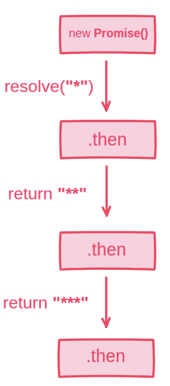
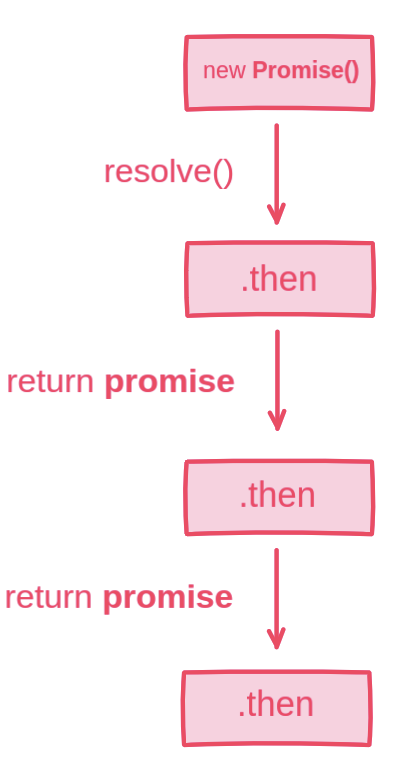

Promises. ES Modules.
Client-side Storage.

JavaScript Course, 2019
JavaScript Basic Course. Acropolium, 2019
JavaScript Course, 2019
ES6 by default
How did we come to Promises?
Brief overview
A long time ago...
not so long ago, actually
Callbacks were the main async pattern
A callback is a function that is passed as an argument to another function, to be "called back" later (when some event will happen).
const saveButton = document.querySelector('.save-button');
saveButton.addEventListener('click', () => {
console.log('Button is clicked!');
});
What's wrong with callbacks?

No guarantees that async function properly handles callback.
The primary source of these problems is the fact, that callback is just a convention for how we handle async operations.
We don't control it with language constructions, all of it at the mercy of developers.
So we need a standardized language primitive to work with async operations.
Here comes Promises
fetchUser('john.doe@gmail.com')
.then({ id } => {
loadThemeByUser(id);
return fetchUserProducts(id);
})
.then(calculateTotalAmount)
.catch(handleError);
The core of asynchronous programming is the relationship between the now and later parts of your program.
I promise I will return to you when I finish.
Imagine you're looking for a job, your steps are:
Success path:
Failure:
For example, after the interview you will receive a promise, that company will notify you about the results.
States of that promise:
Lets turn it into the code with promises:
// Getting the promise:
let promise = getInterview();
// Handle the promise: success and failure
promise.then(acceptOffer, sendCV);
The whole process:
sendCV('Netflix')
.then(getInterview)
.then(acceptOffer)
.catch(keepLearning)
The Promise object represents the eventual completion (or failure) of an asynchronous operation, and its resulting value.
What we know about promises so far:
let promise = new Promise((resolve, reject) => {
// executor
if (/* everything goes as expected */) {
resolve('some value here');
} else {
reject('Error');
}
});
The function passed to new Promise is called the executor.
When promise is created it runs automatically
An executor function receives two arguments: resolve and reject functions. These functions are callbacks and provided by JavaScript.
resolve(value) - if the operation is successfull, with resulting valuereject(error) - if the operation is failed, with error provided (the reason why)new Promise returns a promise object with "pending" state set.
States:

Once a promise resolves to a value, it will always remain at that value and never resolve again.
let promise = new Promise((resolve, reject) => {
resolve('first try');
reject(Error('...')); // ignored
setTimeout(() => { resolve('second try') }, 0); // ignored
});
Promise properties state and result are internal. We don't have access to them.
So to consume a promise value, we can subscribe to one of these methods:
.then accepts two callbacks: onFulfilled and onRejected
let promise = new Promise((resolve, reject) => {
setTimeout(() => { resolve('your value') }, 5000);
});
promise.then(
value => console.log(value), // logs 'your value' after 5 seconds
error => console.log(error) // doesn't executed
);
We can skip onRejected function and provide only functin for successfull completion (e.g. we're handling errors with .catch method).
let promise = new Promise((resolve, reject) => {
setTimeout(() => { resolve('your value') }, 5000);
});
promise.then(
value => console.log(value) // logs 'your value' after 5 seconds
);
.catch(handleError) is the same as .then(null, handleError)
let promise = new Promise((resolve, reject) => {
setTimeout(() => { reject(Error('Sorry dude')) }, 5000);
});
promise.catch(error => {
console.log(error); // logs "Error: Sorry dude" after 5 seconds
});
.finally(handler) always executes when the promise is settled: either resolved or rejected
let isLoading = true; // set to true before request
let promise = new Promise((resolve, reject) => {
setTimeout(() => { resolve(true) }, 5000);
});
promise.finally(() => {
isLoading = false; // set to false when request is finished
});
You can subscribe for promise even if it's already settled.
let promise = new Promise(resolve => resolve('done'));
// lines of code ...
// the promise already resolved
promise.then(console.log); // done
All handlers are still asynchronous
You can think of it like setTimeout(handler, 0) (consistency)
func1(value1 => {
func2(value2 => {
func3(value3 => {
func4(value4 => {
func5(value5 => {
// ...
});
});
});
});
});
func1()
.then(func2)
.then(func3)
.then(func4)
.then(func5);
We can chain promises to specify asynchronous workflow.
Thanks to fact that .then() returns a new promise.
The core idea is that the result is passed through the chain of .then handlers.
let promise = new Promise(resolve => setTimeout(resolve, 1000, '*'));
promise
.then(value => {
console.log(value); // *
return value + '*';
})
.then(value => {
console.log(value); // **
return value + '*';
})
...

const delay = time => new Promise(resolve => setTimeout(resolve, time));
delay(1000)
.then(() => {
console.log('step 1 (after 1000ms)');
return delay(3000);
})
.then(() => {
console.log('step 2 (after 3000ms)');
return delay(4000);
});

Promise static methods:
Promise.all() takes an array of promises and returns a new promise:
Promise.all([
new Promise(res => setTimeout(() => res('value1'), 1000)),
new Promise(res => setTimeout(() => res('value2'), 2000)),
new Promise(res => setTimeout(() => res('value3'), 3000)),
])
.then(values => { console.log(values) }); // after 3s: ['value1, 'value2', 'value3']
const logoUrls = ['logo1.svg', 'logo2,svg', 'logo3.svg'];
const requests = logoUrls.map(fetchLogo);
Promise.all(requests)
.then(logos => { console.log(logos); })
.catch(error => { console.error(error); });
Promise.race() takes an array of promises and returns a new promise:
Promise.race([
new Promise(res => setTimeout(() => res('value1'), 3000)),
new Promise(res => setTimeout(() => res('value2'), 1000)),
new Promise(res => setTimeout(() => res('value3'), 2000)),
])
.then(value => { console.log(value) }); // after 1s: value2
Imagine taht we need to set timeout for certian request:
Promise.race([
new Promise((resolve, reject) => {
setTimeout(reject, 15000); // Will be rejected after 15s
}),
fetchFonts()
]);
Promise.resolve() creates a fulfilled promise with passed value.
const promise = Promise.resolve('some value');
promise.then(value => console.log); // some value
If we pass a promise, it will be returned as it is.
const promise1 = Promise.resolve('value1');
const promise2 = Promise.resolve(promise1);
console.log(promise1 === promise2); // true
Promise.reject() takes a value and creates a rejected promise with that value.
const promise = Promise.reject(Error('Wrong!'));
promise.catch(error => console.log); // Error: Wrong!
doSomething().then(() => {
return doSomethingElse();
});
doSomething().then(() => {
doSomethingElse();
});
doSomething().then(doSomethingElse());
doSomething().then(doSomethingElse);
When would you use client data storage?
Main mechanisms for storing data on the client.
Cookies are mainly for reading server-side, whereas web storage can only be read by the client-side.
It arose as a solution to the issues with Cookies, by offering a more intuitive and secure API for storing simple data within the browser.
While cookies typically deal with server/client communication, the Web Storage API is best used for client-only data.
Supported in all modern browsers
Provides mechanisms for storing key-value pairs of data within the browser.
Web Storage comes in two flavors:
localStoragesessionStorageAccessible via Window object:
window.localStorage or just localStorage
Can use up to 10MB of storage (actually the sum of both)
Stores data with no expiration date (should be deleted manually)
localStorage and sessionStorage are both instances of the Storage object.
setItem(key, value) - store key/value pairgetItem(key) - get the value by keyremoveItem(key) - remove the key with its valuekey(idx) - get the key on a given positionclear() - delete all keyslength - the number of stored items
const userTheme = 'brand-dark-ui';
// Write data to storage
localStorage.setItem('theme', userTheme);
// Read data from storage
localStorage.getItem('theme'); // 'brand-dark-ui'
You can also treat the localStorage interface like a JavaScript object.
// Save data to storage
localStorage.user = 'John Doe';
// Retrieve data
console.log(localStorage.user); // 'John Doe'
// Delete value
delete localStorage.user;
Recommended way to interact with Storage is to use built-in methods.
Built-in methods fire 'storage' event.
const user = {
email: 'john.doe@gmail.com',
role: 'partner'
};
localStorage.setItem('user', user);
localStorage.getItem('user'); // "[object Object]"
Only Strings are acceptable
const user = { email: 'john.doe@gmail.com', role: 'partner' };
// Convert data to JSON before saving to storage
localStorage.setItem('user', JSON.stringify(user));
// Parse stored value
const cachedUser = JSON.parse(localStorage.getItem('user'));
Similar to localStorage, but has one key difference:
The data is only stored for the browser tab session.
Data will be lost if you:
const searchTerm = 'tame impala';
// Write data to storage
sessionStorage.setItem('cachedSearchInput', searchTerm);
// Read data from storage
sessionStorage.getItem('cachedSearchInput'); // 'tame impala'
The data that you add to the Web Storage is sandboxed to your websites domain name.
Sub-domains (i.e. a.example.com, b.example.com) are treated as separate domains and are therefore given their own datastore.
Port and protocol (http, https) should also be the same, so example.com:8080 can't access storage data from example.com:8081
Fires when the data gets updated in localStorage or sessionStorage.
The event fires on all window objects where the storage is accessible, except the one that caused it.
Storage event allows communication between different tabs/windows from the same origin.
key - changed key (null if .clear() was called)oldValue - the old value (null if the key was newly added.)newValue - the new value (null if the key is removed)url - the url of the document where the update happenedstorageArea - Storage object where the update happened
import { setNewTheme } from './services/ui';
window.addEventListener('storage', event => {
if (event.key !== 'userTheme') return;
setNewTheme(event.newValue);
});
| Cookies | Local storage | Session storage | |
|---|---|---|---|
| Capacity | 4kb | 10mb | 5mb |
| Browsers | HTML4/HTML5 | HTML5 | HTML5 |
| Accessible from | Any window | Any window | Same tab |
| Expires | Manually set | Never | On tab close |
| Storage location | Browser and server | Browser only | Browser only |
| Sent with requests | Yes | No | No |
localStorage and sessionStorageWhy we need modularity?
Simply put, modules give us a better way to organize code.
With modules, we group the variables and functions that make sense to go together.
Multiple HTML script tags:
<script src="lib1.js"></script>
<script src="lib2.js"></script>
<script src="component1.js"></script>
<script src="index.js"></script>
Problems:
A module is just a file. Any .js file can be treated like a module.
To use modules in a browser you should set type attribute to "module":
<script src="index.js" type="module"></script>
type="module" is a flag for the browser that included script should be executed as a module
Module scripts are deferred by default, it means:
Modules always use strict mode by default. Keep that in mind.
// index.js
// Don't need to set "use strict" manually
name = 'John'; // Error
console.log(this); // undefined
Modules has own scope, the same time having access to the global scope.
In other words, variables and functions from a module are not seen in other scripts or global scope.
// index.js
const counter = 5;
// Global scope
console.log(counter); // undefined
To load/share modules there are directives export and import.
export - exports labeled variable to be accessible from outside the module scopeimport - imports exported code from other modulesExport
// module1.js
export function getBrowserLang() {
return window.navigator.language;
}
// module1.js
function getBrowserLang() {
return window.navigator.language;
}
export { getBrowserLang };
Import
// module2.js
import { getBrowserLang } from './module1.js';
const lang = getBrowserLang();
Export
// module1.js
export const MAX_AMOUNT = 90;
export const list = [];
Import
// module2.js
import { MAX_AMOUNT, list } from './module1.js';
console.log(MAX_AMOUNT); // 90
console.log(list); // []
If there are a lot of imports, we can import everything as an object
Export
// module1.js
export const MAX_AMOUNT = 90;
export const list = [];
Import
// module2.js
import * as phones from './module1.js';
console.log(phones.MAX_AMOUNT); // 90
console.log(phones.list); // []
We can use as to import and export under different names.
Export
// module1.js
export const MAX_AMOUNT = 90;
export const list = [];
export {
MAX_AMOUNT as limit,
list as data
};
Import
// module2.js
import { limit as maxLimit, data } from './module1.js';
console.log(maxLimit); // 90
console.log(data); // []
One exportable entity per module
Export
// hotel.js
export default class Hotel {
constructor(name, location) {
this.name = name;
this.location = location;
}
}
Import
// index.js
import Hotel from './hotel.js'; // Not { Hotel }
const hiltonHotel = new Hotel('Hilton Hotel', 'Kyiv');
There may be only one export default per file.
Actually, we can have both default and named exports in a single module.
Recommended to have either named exports or the default one in a single module.
For default export, the exported entity can go without name.
export default function() {}
export default ['North', 'East', 'West', 'South'];
export default class {}
When you import without curly braces, it looks at default field of exported module object.
You can use the default keyword to reference the default export.
function getHotelUsers() {}
// same as "export default" before the function declaration
export { getHotelUsers as default };
import { default as Hotel, getHotelUsers } from './hotel.js';
const hotel = new Hotel('Hilton Hotel', 'Kyiv');
import * as hotelService from './hotel.js';
const Hotel = hotelService.default;
new Hotel('Hilton Hotel', 'Kyiv');
If you use default export, consider applying a developers convention that imported entities should correspond to file names.
import Hotel from './hotel.js';
import HotelPage from './hotel-page';
import HotelService from './hotel-service';
Syntax structure export ... from ... allows you to import entities and immediately export them.
// index.js
export { hotelService } from './hotel-service.js';
export { default as Hotel } from './hotel.js';
Commonly used in libraries and third-party packages.
ESM behave like "singletons".
A module code loaded and executed only once - the first time when imported.
Exports are generated and then they are shared between importers.
// country.js
export const country = { code: 'au' };
// file1.js
import { country } from './country.js';
country.code = 'ua';
// file2.js
import { country } from './country.js';
console.log(country.code); // ua
Any code referencing a module understands it's a dependency. So if the module file is changed or moved, the problem is immediately obvious.
Must include extension:
import 'hotel.js';
Path reference should be either relative or absolute:
import './hotel.js';
import '../store.js';
import 'https://some-path.come/module.js';
Can't be dynamic for static imports.
Old browsers without ESM support won't run module scripts. We can provide a fallback script with a nomodule attribute.
<script src="index.js" type="module"></script>
<script nomodule src="index.js"></script>
Only the browsers without ESM support will run the script with nomodule attribute.
For production apps, ESM most commonly are being used with module bundlers.
Reasons: